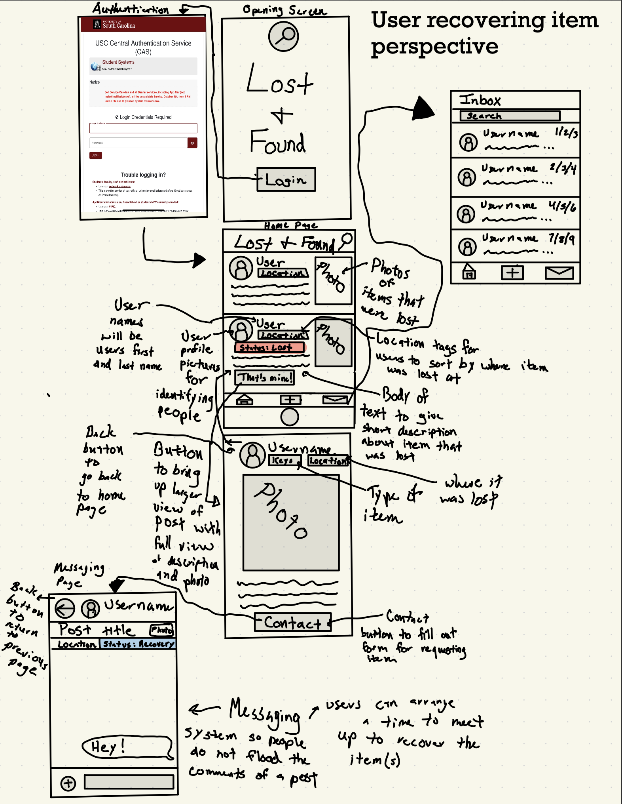

Problem Statement

There currently is no central campus lost and found system, making it difficult for students to report, track, and recover lost items.
Affinity Diagram
Affinity diagram is a great way to visualize ideas and elements to implement into a product. The group and I made 5 types of ideas including: advertising, user feedback and revision, tech stack, basic features, and miscellaneous. We included 32 different ideas with at least 5 in each category.
Sketches
Wireframe sketches are an excellent tool for developing a prototype view of an app you're designing. My group and I decided to create three different scenarios for three types of users interacting with our app. The first scenario involves a user who has lost an item and is using the forum to try to recover it. The second scenario features a user who has found a lost item and wants to report it on the forum. The third scenario focuses on a data scientist who is interested in collecting metrics such as the most common places where items are lost, the types of items most frequently lost, and the number of items that have been lost, recovered, or are still in the recovery process. The data scientist can export all of this information into a usable format, such as a .csv file, for further data processing and visualization.